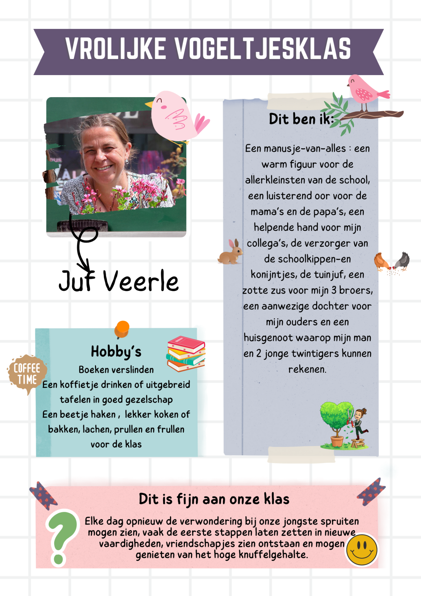

De Vrolijke vogeltjesklas
welkom in de Vrolijke vogeltjesklas Bij juf Veerle – de instappertjes

September 2024 – 2025
Het Beestige bos
welkom in het Beestige bos bij juf Hanne – de eerste kleuterklas
September 2024 – 2025
De Pimpampoenenklas
welkom in de pimpampoenenklas Bij juf Tamara – de tweede kleuterklas


September 2024 – 2025
De Kikkerklas
welkom in de Kikkerklas Bij juf Peggy – de derde kleuterklas
September 2024 – 2025
Bewegingsopvoeding
welkom bij bewegingsopvoeding Bij juf Tessa – De bewegingsopvoeding ks